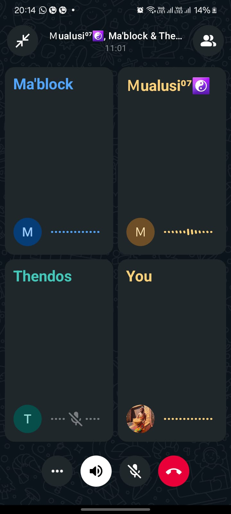
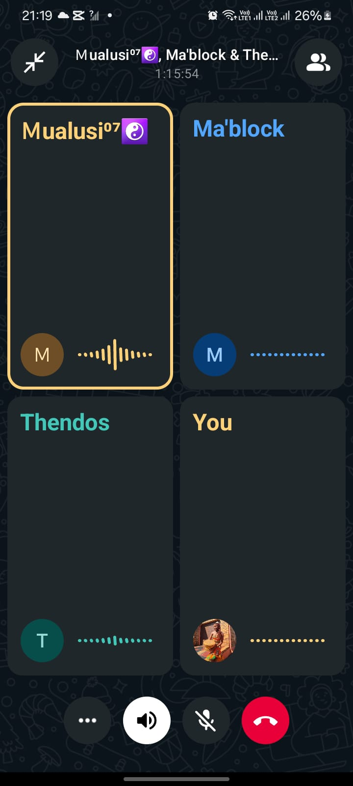
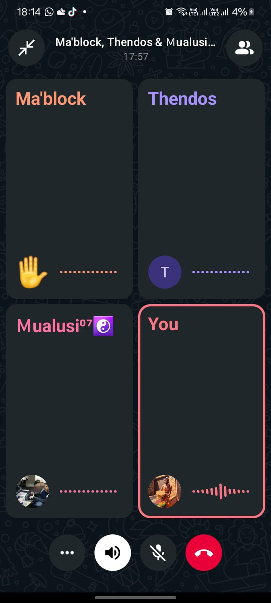
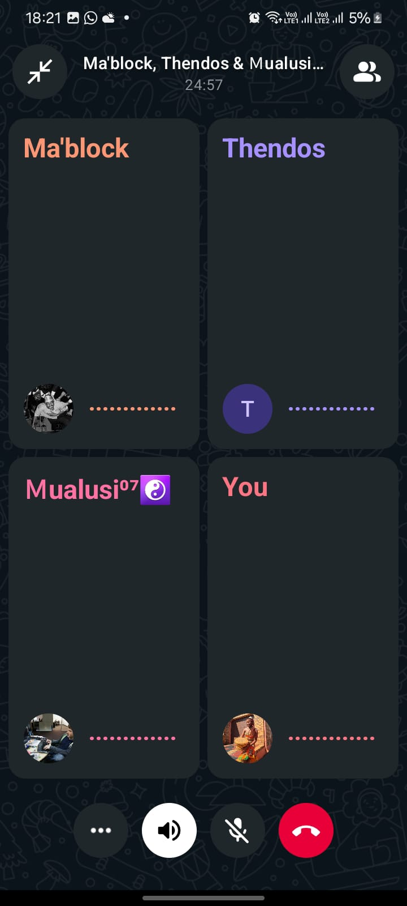

Methodology Used
We continue to use Agile Scrum as our project management methodology. In Sprint 2, we focused on actively following Scrum practices more closely, ensuring that planning, execution, and review cycles are properly respected.
Sprint Planning
Sprint 2 planning was carried out with better-defined deliverables and clearer acceptance criteria. This helped avoid ambiguity in tasks.
- Backlog items were refined before the sprint began
- Each task was assigned a priority and estimated effort
- Dependencies were identified early to reduce blockers
Daily Stand-ups
Our team held short daily meetings to keep updates concise and outcome-focused. Each member answered:
- What they accomplished yesterday
- What they plan to complete today
- Any blockers that need attention
This ensured alignment and faster problem-solving.
Task Tracking
We track all tasks using Notion, where each task moves through the following workflow:
- To Do
- In Progress
- Review / Testing
- Done
This keeps all tasks organized, transparent, and easy to follow.
Evidence & References
- All sprint planning, task tracking, and retrospectives are documented in our Notion workspace
- Official Scrum Guide: https://www.scrumguides.org/
Proof of our Sprint 2 meetings:




Rationale
Continuing Agile Scrum in Sprint 2 ensured that:
- We delivered working features incrementally
- Feedback loops were shorter due to structured reviews
- We actively followed Scrum methodology instead of loosely applying it
- Transparency was improved through Notion task tracking